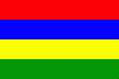

【国名】毛里求斯共和国
【国旗】红色象征为独立自由而斗争，蓝色象征大海，黄色象征独立之光照耀岛国，绿色象征农业和四季常青。
【面积】2040平方公里（包括属岛）。
【人口】 全国人口约129.35万人。居民主要由印巴、非洲、中国和欧洲移民的后裔组成。印裔约占全国人口的69%，克里奥尔人(非洲和非欧混血后裔)约占27%，华人约占2.3%，法、英等欧洲后裔约占1.7%。
【首都】路易港，面积42.7平方公里，人口14万。
【行政区划】毛里求斯分为7个大区和5个直辖市，区下设130个村。5个城市分别是路易港市、博巴森/荷精市、卡特邦市、瓦瓜/菲尼克斯市、鸠比市。首都路易港市位于毛岛西北部，三面依山一面临海，群山构成天然屏障。面积42.7平方公里，人口约14万。其名称源于法国国王路易十五。始建于1735年法国总督拉波多内统治时期，是毛政治、经济、金融中心和联系非洲、亚洲、大洋洲的重要中转站。市内有店铺林立的唐人街、自然历史博物馆、圣路易大教堂、清真寺和赛马场等，是毛多民族、多文化交融的缩影。路易港是印度洋最繁忙的港口之一，常可看到不同国籍的商船和渔船在此停靠，呈现热闹而忙碌的海港风情。港口附近有专门为游人开辟出的Caudan水滨购物中心区，有宽敞洁净的购物大楼，可以买到各种纪念品及服饰。
【语言】英语是毛官方语言。法语普遍使用，报刊、杂志、电视以法文为主；克里奥尔语是居民最常用口语。
【时区】属东四区，比北京晚四小时。
【货币】毛里求斯卢比。
【节日】 3月12日为独立日和共和国日，元旦是各民族共同的节日。此外每个民族有各自节日，如印裔的灯节、泰米尔人的扎针节、穆斯林的开斋节、基督徒的圣诞节和华人的春节，均为公共假日。
【自然地理】位于非洲大陆东南，印度洋西南部，由若干岛屿组成。海岸线长250公里，西距马达加斯加800公里、距非洲大陆东海岸2200公里，南距留尼汪160公里，东距澳大利亚4827公里。毛主岛系火山喷发形成，浅海地区有珊瑚礁环绕。全年分夏、冬两季：11月至次年4月为夏季，沿海平均气温27℃，中部高原22℃，海水温度约27℃；5月至10月为冬季，沿海平均气温24℃，中部高原19℃，海水温度约22℃。
【简史】毛里求斯原为荒岛。早在公元一千年前，阿拉伯商人就曾抵达此地。16世纪初，葡萄牙人探险队将现在的毛里求斯、罗德里格斯和留尼汪诸岛取名为马斯克林群岛，但未在岛上开辟殖民地。1598年荷兰人占领该岛，并以荷兰君主莫里斯的名字命名。1715年法国占领毛岛并改名为“法兰西岛”。1814年成为英国殖民地，并被重新命名为“毛里求斯”。1961年实行自治。1968年3月12日宣布独立，英国女王为国家元首，总督代表其行使权力。1992年3月12日改行共和制，仍留在英联邦内。